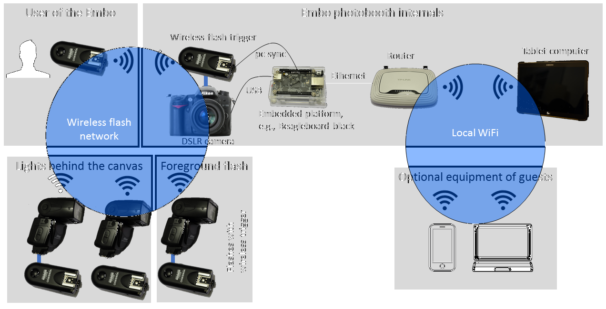

Embo
Embedded Photo Booth
Project maintained by andreasbaak Hosted on GitHub Pages — Theme by mattgraham
Embo
Embedded Photo Booth (Embo) enables you to build your own photobooth from scratch. To this end, we give detailed instructions in both hardware and software setup. In particular, we provide an open source implementation of a sophisticated photobooth software within this github project. The software was designed with the goal of a highly efficient, zero maintenance operation mode.
Embo features a photobooth containing
- A DSLR camera with a prime lense for optimal picture quality
- A 10 inch high resolution tablet that serves as a display for an awesome preview experience
- A WiFi router to enable your guests to view the up-to-date photo gallery on their smartphones or tablets
- An embedded platform (e.g., Beaglebone Black) running a custom yocto-based Linux operating system that hosts the Embo software
The Embo is triggered wirelessly using a remote control for the camera.
In order to achieve high quality pictures, we suggest (and instruct you) to use a background canvas and an indirect flash (for example, a reflective umbrella or a large softbox). We usually use a white background canvas and flash it from behind in order to remove shadows and other imperfections of the canvas.
Embo - Internal Technical Design
 Being build around a high quality DSLR camera, Embo needs to make sure that
- The user can remotely trigger the camera to take an image
- The image is displayed as fast as possible on the screen.
In order to remotely trigger the camera, we use standard off-the-shelf wireless camera triggers. These camera triggers connect the user, the DSLR camera and all flashes required to light the scene.
We use an embedded platform (Beaglebone Black) to grab the image from the camera. To this end, we connect the platform to the DSLR camera via an USB cable. The platform runs our Embo software that internally uses the gphoto2 Linux library for grabbing the image from the camera.
In addition to the USB connection from the camera to the platform, we use a connection from the wireless flash trigger to the GPIO ports of the platform. This enables us to instantaneously react on the event of taking a picture and to let Embo display a "please wait" screen before the actual image is downloaded from the camera. The connection uses the pc-sync output of the wireless flash trigger.
The platform is connected to a wireless router using an Ethernet cable. The router spans a wireless network that the tablet computer connects to. This way, the tables computer can wirelessly access and display the picture that has just been taken. The wireless network is also used in order to let your guests access the current photo gallery using their personal devices.
Embo - Box Assembly
As you can see, there is quite a bit of hardware involved. You have to hide this hardware from the Embo users. To this end, you need to build a container that hosts the camera, the screen (i.e., the tablet), the wifi router and the embedded board. In order to get a rough impression of the container that you will build, you can download the corresponding SketchUp model here: Photobooth-Sketch.skp

When it's build, Embo looks like this from the outside:


I used medium-density fiberboard (MDF) wood, 9mm thick, in order build the box. Simple woodscrews are used to affix the boards. Make sure that you pre-drill all holes before you affix the screws in order to avoid splicing the wood. Also, I suggest to countersink the screws in order to avoid that the screw-heads stand out. After the box was build, I painted it with acrylic paint. I diluted the paint with water in order to create a paint that lets you see the vein of the wood of the MDF fiberboard.